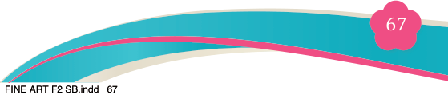
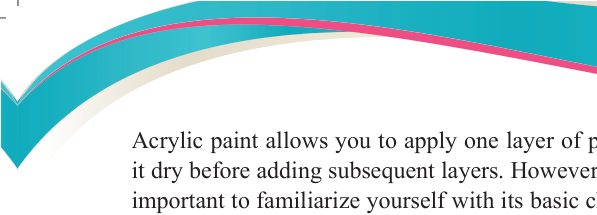
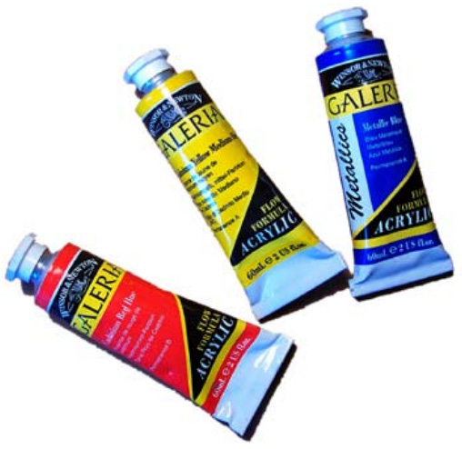

Acrylic paint allows you to apply one layer of paint on a piece of paper and let

it dry before adding subsequent layers. However, before using acrylic paint, it is important to familiarize yourself with its basic characteristics and how it works.
Each painting medium has its own unique properties that distinguish it from the other types of paint.
Basic characteristics of acrylic paints
The basic characteristics of acrylic paints are:
(a) Wet acrylic paint is soluble in water.
(b) Once applied on a surface, acrylic paint becomes permanent.
(c) Acrylic paint evaporates in air when applied on a surface.
(d) A dry painted acrylic surface can be cleaned by lightly washing with soap and clean water.
(e) Acrylic paint keeps brushes wet for a period.
(f) Acrylic paint doesn’t catch fire.
Note: Acrylic paint is not soluble in turpentine because it is a water-based paint.
Materials and tools
For simple functional acrylic painting, the following materials and tools are needed:
Acrylic paints, painting brushes of different sizes and shapes and a pallet for mixing
colours, painting board, pencils, sharpeners, pieces of sponge, easels masking tape.
Others are canvas or acrylic paper, water for cleaning brushes, and paper towels.
Most of these materials and tools were discussed in Form One, except for acrylic paint and its brushes. These are discussed below as follows:
1. Acrylic paint
Acrylic paint is a fast-drying
medium compared to other types of paint. It is made from pigment
suspended in an acrylic polymer
emulsion. While acrylic paints
are water-based, they become
water-resistant once dry. This
property may lead some to
confuse acrylic paintings with
water-colour, oil paintings, or
gouache. However, acrylics have distinct characteristics
that set them apart from other mediums.

Figure 4.3: Acrylic colours in tube package
Source: https://madill.typepad.com/mr_sherwoods_